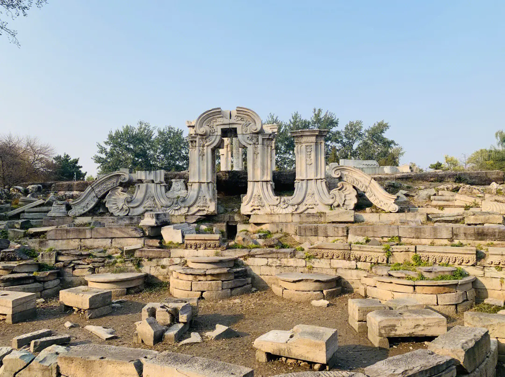

Yuanmingyuan Park
From： baike.baidu.com

Yuanmingyuan Ruins Park was completed in 1988, with only the landscape system, garden pattern and building foundations remaining, and the remnants of rockery and carvings still visible
Yuanmingyuan Ruins Park is located in the central east of Haidian District, Beijing, and is a famous patriotic education base. The park was completed in 1988, with only the landscape system, garden pattern and building foundations remaining, and the remnants of rockery and carvings still visible. In the former site of the European palace, there is a garden history exhibition hall built for people to revere.
First built in the 46th year of Kangxi era of the Qing Dynasty (1707), Yuanmingyuan is composed of three gardens: Yuanmingyuan, Changchunyuan and Qichunyuan. Covering an area of 350 hectares (more than 5,200 mu) with a water surface area of about 140 hectares (2,100 mu), there are more than a hundred landscapes and a building area of more than 160,000 square meters. It is a large royal palace created and operated by the emperors of the Qing Dynasty during more than 150 years.
 330445074@qq.com
330445074@qq.com